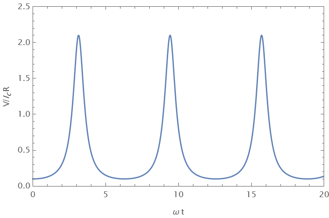
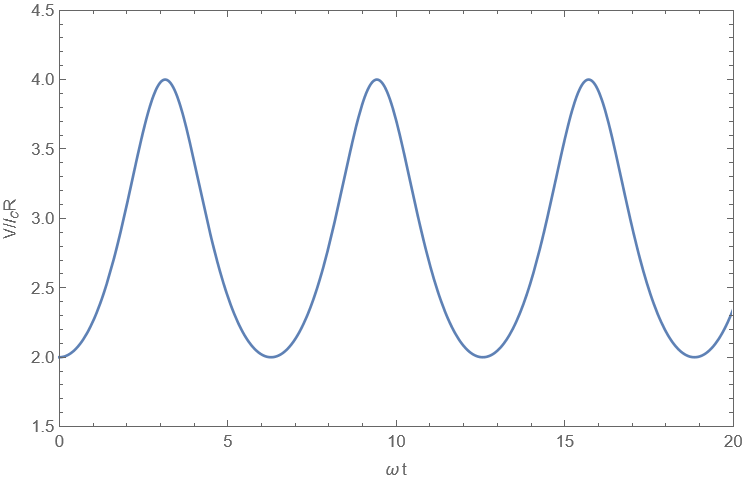

X25 (2025) — English translation
The voltage sets the derivative of the phase difference at the contact $$ \dot{\varphi} = \frac{2 \pi} {\Phi_0}V. $$Since до включения напряжения current equals нулю, initial phase $\varphi(0) = 0$. (For/At включении напряжения фазnot может измеstring/threadся мгновенно, since быстрое изменение фазы for/atводит к бесконечно большому напряжению.) Then фаза имеет вид $$ \varphi = \frac{2 \pi} {\Phi_0}V t. $$Then полный current складывается from нормального currentа $I_n = V/R$ and сверхпроводящего currentа $I_s = I_c \sin \varphi$
Let us write the total current as the sum of the normal current and the superconducting current, expressing the voltage through the derivative of the phase, as a result we obtain
Differentiating the equation, we obtain $$ (I_c \cos \varphi )\dot{\varphi} + \frac{\Phi_0}{2 \pi R} \ddot{\varphi} = 0. $$Производную $\dot{\varphi}$ let us express via/through voltage $$ V (I_c \cos \varphi) + \frac{\Phi_0}{2 \pi R} \dot{V} = 0, $$а косинус фазы – via/through синус from исходного уравнения, $$ I_c \sin \varphi = I - \frac{V}{R}, \quad I_c^2 \cos^2 \varphi = I_c^2 - \left(I - \frac{V}{R} \right)^2, $$Finally we obtain
Let us express the derivative of the voltage $$ \dot{V} = - \frac{\dot{u}}{u^2}, $$substituting в equation $$ \frac{\dot{u}^2}{u^4} = \left(\frac{2 \pi R}{\Phi_0} \right)^2 \frac{1}{u^2} \left(I_c^2 - \left(I - \frac{1}{R u} \right)^2\right). $$Домножая на $u^4$, we obtain
Differentiating the equation from the previous paragraph, we obtain the vibration equation $$ \ddot{u} = - \left(\frac{2 \pi R}{\Phi_0} \right)^2 \left( (I^2 - I_c^2) u - \frac{I}{R} \right). $$From coefficientа перед $u$ we find частоту колебаний $$ \omega = \frac{2\pi R}{\Phi_0} \sqrt{I^2 - I_0^2}, $$а also положение equalsвесия $$ u_0 = \frac{I}{R (I^2 - I_c^2)}. $$For того, чтобы найти амплитуду колебаний, we determine значения $u$, for/at которых $\dot{u} = 0$, we get квадратное equation $$ (I^2 -I_c^2)u^2 - \frac{2I}{R} u + \frac{1}{R^2} = 0, $$корни которого $$ u = \frac{1}{I^2 - I_c^2} \left( \frac{I}{R} \pm \frac{I_c}{R}\right), \quad u_1 = \frac{1}{R(I + I_c)}, \quad u_2 = \frac{1}{R(I-I_c)}. $$Тот же result можно найти, оlimitandв максимальное and минимальное значения напряжения from the equation $$ I = I_c \sin \varphi + \frac{V}{R}, \quad V_{min} = R(I- I_c), \quad V_{max} = R(I + I_c). $$Then amplitude $$A = \frac{1}{2} (u_2 - u_1) = \frac{I_c}{R(I^2 - I_c^2)}.$$
The dependence of the quantity $u$ on time $$ u = u_0 + A \cos \omega t, $$where фаза оlimitяется тем conditionм, что $V$ минимальна в initial moment времени, and therefore $u$ is maximum.


Let's express the voltage through the phase derivative and integrate over time $$ V =\frac{\Phi_0}{2\pi} \dot{\varphi}, \quad \int\limits_{0}^{T} V(t) dt = \frac{\Phi_0}{2\pi} (\varphi(T) - \varphi(0)). $$If $T$ – period колебаний, то $\varphi(T) - \varphi(0) = 2\pi$, а среднее value напряжения equals $$ \langle V \rangle = \frac{1}{T} \int\limits_{0}^{T} V(t) dt = \frac{\Phi_0}{T} = \frac{\Phi_0}{2\pi} \omega = R\sqrt{I^2 -I_0^2}. $$Этот же result можно поrayandть интегрированием явного выражения for $V(t)$ $$ \langle V \rangle = \frac{1}{T} \int\limits_{0}^{T} V(t) dt = \frac{1}{T} \int\limits_0^{T} \frac{R(I^2 - I_c^2)}{I + I_c \cos \left(\omega t \right)} dt = \frac{1}{2\pi} \int\limits_0^{2\pi} \frac{R(I^2 - I_c^2)}{I + I_c \cos \theta} d\theta, $$where $\theta = \omega t$. Этот интеграл можно вычислить с помощью подстановки $$ \xi = \tan \frac{\theta}{2} , \; \cos \theta = \frac{1-t^2}{1+ t^2}, \; d\theta = \frac{2 dt}{1+ t^2}. $$$$ \int\limits_0^{2\pi} \frac{d\theta}{I+I_c \cos \theta} = \int\limits_{-\pi}^{\pi} \frac{d\theta}{I+I_c \cos \theta} = \int\limits_{-\infty}^{\infty} \frac{\frac{2 dt}{1+t^2}}{I + I_c \frac{1-t^2}{1+t^2}} = 2 \int\limits_{-\infty}^{\infty} \frac{dt}{I+ I_c + (I-I_c)t^2} = \frac{2\pi}{\sqrt{I^2 - I_c^2}}. $$This gives the same answer
Source power $$P = IV = I_s V = I_c \sin\varphi \dfrac{\Phi_0 }{2\pi} \dot{\varphi}.$$Вклад нормального currentа в power имеет вид $$ P_n = I_n V = \frac{1}{R} \left( \frac{\Phi_0}{2\pi}\right)^2 \dot{\varphi}^2. $$For/At увеличении характерного времени изменения фазы $T$ эта power изменяется как $1/T^2$, therefore полное выделившееся тепло ведет себя как $(1/T^2) T \sim 1/T$ and его можно сделать сколь угодно малым, увеличивая $T$. Integrating по времени, let us find работу, совершенную sourceом. $$ A = \frac{\Phi_0 I_c}{2\pi} \int \sin \varphi \dot{\varphi} dt = \frac{\Phi_0 I_c}{2\pi} \int\limits_{0}^{\varphi} \sin \varphi d \varphi = \frac{\Phi_0 I_c}{2\pi} (1 - \cos \varphi). $$This work is equal to the energy of the Josephson junction.
$$ E(\pi) = \frac{\hbar I_c}{e} = 3.3 \times 10^{-19}~\mathrm{J}, $$$$ \omega = 2 \sqrt{3} \frac{e R I_c}{\hbar} = 1.84 \times 10^{12}~\mathrm{s}^{-1} $$
To the expression for the current from part A2, you need to add the current that goes to charge the capacitor, $I_C = \dot{q} = C \dot{V}$, and the voltage derivative is expressed through the second derivative of the phase
For small phase values, the equation has the form (after dividing by the coefficient before the second derivative) $$ \ddot{\varphi} + \frac{1}{RC} \dot{\varphi} + \frac{2 \pi I_c }{\Phi_0 C}\varphi = 0. $$Это equation имеет стандартный вид уравнения затухающих колебаний $$ \ddot{\varphi} + 2 \gamma \dot{\varphi} + \omega_0^2 \varphi = 0, $$с coefficientами $$ \omega_0^2 = \frac{2 \pi I_c }{\Phi_0 C}, \quad \gamma = \frac{1}{2 RC}. $$Then frequency $\omega = \sqrt{\omega_0^2 - \gamma^2}$, Этот answer можно поrayandть, подставит в equation solution вида $\varphi = A e^{i \omega t}$, найдя соответствующие значения $\omega$ and taking the real part.
Quality factor can be expressed as $$ Q = \frac{\omega_0}{2 \gamma} = R \sqrt{\frac{2 eI_c C}{\hbar}}. $$Колебания возможны, пока value $\omega_p$ вещественно, иначе solution уравнения на $\varphi$ будет представлять собой сумму затухающих экспонент, hence we find $$ C \ge \frac{\Phi_0}{8 \pi R^2 I_c}. $$
The total current through the contacts is $$ I = I_a + I_b = I_{ac} \sin \varphi_{a} + I_{bc} \sin \varphi_{b}. $$We use соratio между фазами $\varphi_b = \varphi_a - \Delta \varphi$, where $\Delta \varphi = 2\pi \Phi/\Phi_0$, we get после преобсований $$ I = I_{ac} \sin \varphi_a + I_{bc} \sin (\varphi_a - \Delta \varphi) = (I_{ac} + I_{bc} \cos \Delta \varphi) \sin \varphi_a - I_{bc} \sin \Delta \varphi \cos \varphi_a = I_0 \sin (\varphi_a - \psi), $$where amplitude $$ I_0^2 = (I_{ac} + I_{bc} \cos \Delta \varphi)^2 + (I_{bc} \sin\Delta \varphi)^2 = I_{ac}^2 + I_{bc}^2 + 2 I_{ac} I_{bc} \cos \Delta \varphi, $$а фаза оlimitяется соотношениями $$ I_0 \cos \psi = I_{ac} + I_{bc} \cos \Delta \varphi, \quad I_0 \sin \psi = I_{bc} \sin \Delta \varphi. $$Ток будет максимальным, if аргумент синуса equals $\pi/2$, that is $\varphi_a = \psi + \pi/2$, hence $$ \cos \varphi_a = - \sin \psi= - \frac{I_{bc} \sin \Delta \varphi}{\sqrt{ I_{ac}^2 + I_{bc}^2 + 2 I_{ac} I_{bc} \cos \Delta \varphi}}. $$Косинус второй фазы можно поrayandть, using симметрию между контактами $a$ and $b$ (if записать expression for $I_0$ via/through $\varphi_b$, expression будет отличаться только заменой $a$ на $b$ в индексах and изменением signа $\Delta \varphi$). Иначе его можно найти прямым вычислением $$ \cos \varphi_b = \cos (\varphi_a - \Delta \varphi) = \cos \varphi_a \cos \Delta \varphi + \sin \varphi_a \sin \Delta \varphi. $$Substituting выражения for косинуса and синуса via/through $\psi$, we get $$ \cos \varphi_b = - \sin \psi \cos \Delta \varphi+ \cos \psi \sin \Delta \varphi = - \frac{I_{bc} \sin \Delta \varphi}{I_0} \cos \Delta \varphi + \frac{I_{ac} + I_{bc} \cos \Delta \varphi}{I_0} \sin \Delta \varphi, $$$$ \cos \varphi_b = \frac{I_{ac} \sin \Delta \varphi}{\sqrt{ I_{ac}^2 + I_{bc}^2 + 2 I_{ac} I_{bc} \cos \Delta \varphi}}. $$